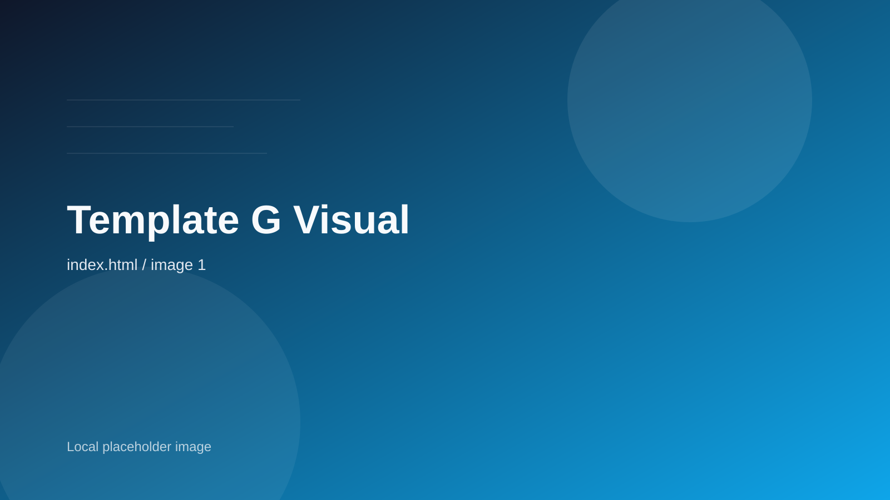

01
Air + Ground Priority Chain
緊急案件向けに航空輸送と前後の陸送を一体で組み、通関や横持ちの時間ロスまで縮めます。
- check_circle優先搭載枠の確保
- check_circle空港搬入前の事前通関整理
- check_circle納品時刻ベースの配車最適化

Corridor Control / 2026
通関前後の停滞、拠点間の在庫偏り、配送遅延の兆候を、 同じ画面で読み取り、同じ判断で動かせる物流設計を提供します。
Live Control Deck
Asia to EU Corridor
Transit ETA
48h
Tokyo Port to Rotterdam DC
Exception Queue
03
Customs / Dock / Final-mile
Warehouse Fill
82%
Yokohama / Busan / Hamburg
Alert Response
12m
24/7 operations center
Routing Note
高優先貨物は空輸へ、定常品は海上へ切り替え、通関混雑時は釜山ハブ経由へ自動再計画。
Annual Shipments
5.2M
Countries Served
220+
On-time Delivery
98.4%
Response SLA
15 min
Integrated Solutions
案件ごとに見積もるのではなく、どの区間で滞留が起き、どの拠点で吸収し、どこで見える化するかまでを物流設計として扱います。
緊急案件向けに航空輸送と前後の陸送を一体で組み、通関や横持ちの時間ロスまで縮めます。
海上輸送、港湾作業、DC在庫を同じリズムで管理し、コスト優位を保ちながら欠品リスクを抑えます。
倉庫保管、ピッキング、追跡、例外処理までを標準化し、現場判断を再現可能な運用へ揃えます。
Network Map
日本、東南アジア、欧州、北米の戦略ハブを基点に、輸送時間、通関難易度、需要変動に応じて最適な回廊を組み替えます。
Primary Hubs
Tokyo / Singapore / Rotterdam
Control Layer
24/7 exception monitoring
Customs Flow
Pre-clearance ready
Visibility
Shipment to shelf